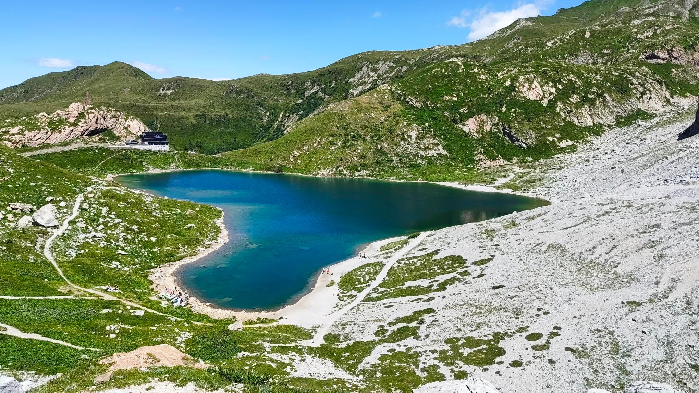

Il Lago Volaia è un piccolo lago alpino situato nelle Alpi Carniche, in Friuli Venezia Giulia, Italia. È un luogo ideale per escursioni e passeggiate nella natura, offrendo panorami mozzafiato e un ambiente tranquillo.
Il Lago Volaia è una meta ideale per chi cerca un'esperienza immersiva nella natura alpina, con la possibilità di godere di paesaggi unici e momenti di relax lontano dal trambusto della vita quotidiana.